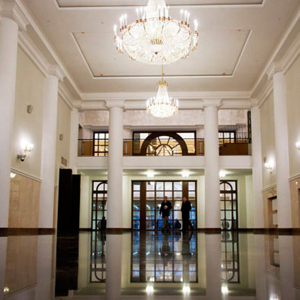
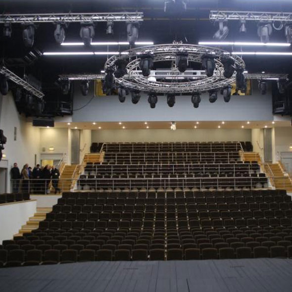
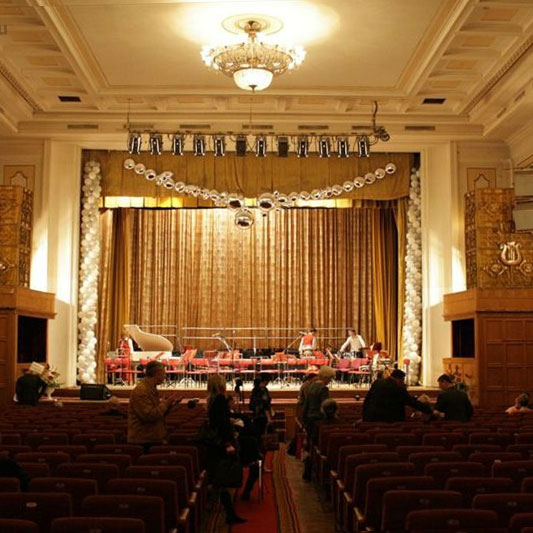
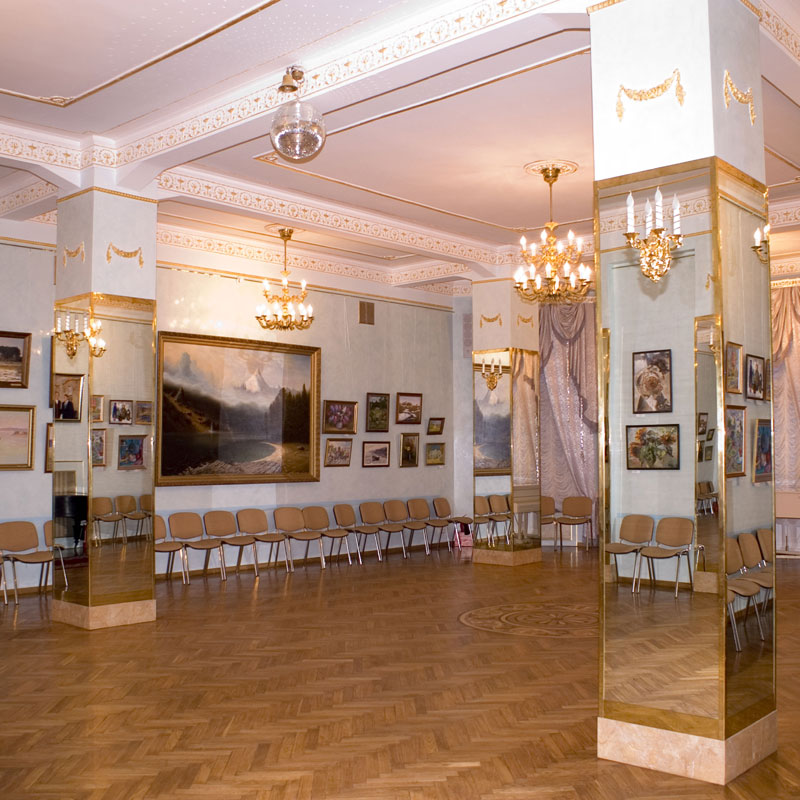

Арендовать концертный зал в Москве



Парковка (5)
Электронный билет
SKD
Гардероб
Буфет

Проходное место
Внешняя реклама
Касса
Градский Холл - Большой зал
Градский Холл
Полное название - Государственное бюджетное учреждение культуры города Москвы «Московское
театрально-концертное музыкальное объединение под руководством А. Градского», неофициальное
название Театр Градского - театр в центре Москвы. Театр находится в
Полное название - Государственное бюджетное учреждение культуры города Москвы «Московское
театрально-концертное музыкальное объединение под руководством А. Градского», неофициальное
название Театр Градского - театр в центре Москвы. Театр находится в
5
Добрынинская, 2 мин пешком
589 мест
570 000 руб.
Арендовать


Парковка (5)
Электронный билет
SKD
Гардероб
Буфет
Проходное место
Внешняя реклама
Касса
Большой зал Консерватории им. П.И. Чайковского
Консерватория им. П.И. Чайковского
Полное название - Государственное бюджетное учреждение культуры города Москвы «Московское
театрально-концертное музыкальное объединение под руководством А. Градского», неофициальное
название Театр Градского - театр в центре Москвы. Театр находится в
Полное название - Государственное бюджетное учреждение культуры города Москвы «Московское
театрально-концертное музыкальное объединение под руководством А. Градского», неофициальное
название Театр Градского - театр в центре Москвы. Театр находится в
3
Арбатская, 8 мин пешком
1
Охотный ряд, 11 мин пешком
1
Библиотека им. Ленина, 12 мин пешком
1734 места
1 480 000 руб.
Арендовать
Хотите знать обо всех новых площадках?
Подпишитесь на наши обновления и получайте лучшие предложения первыми!
+7
Подписаться



Парковка (5)
Электронный билет
SKD
Гардероб
Буфет
Проходное место
Внешняя реклама
Касса
Центральный дом ученых - Большой зал
Центральный дом ученых РАН
Полное название - Государственное бюджетное учреждение культуры города Москвы «Московское
театрально-концертное музыкальное объединение под руководством А. Градского», неофициальное
название Театр Градского - театр в центре Москвы. Театр находится в
Полное название - Государственное бюджетное учреждение культуры города Москвы «Московское
театрально-концертное музыкальное объединение под руководством А. Градского», неофициальное
название Театр Градского - театр в центре Москвы. Театр находится в
1
Кропоткинская, 4 мин пешком
534 мест
380 000 руб.
Арендовать
Разместить площадку
Зарегистрируйте площадку на сервисе easyHall и
начните получайть заявки от организаторов мероприятий
уже сейчас!
Начать!
empty
empty
Получать новости и акции сервиса по СМС
+7
Подписаться
Мы в социальных сетях:
Арендовать концертный зал в Москве на Easyhall.ru
Арендовать хорошую по соотношению цена-качество площадку или зал не так то просто, seo текст
Однажды утром в обычный час пришли на рынок торговцы и принесли с собой свои товары. Здание рынка со
всех сторон окружала галерея в шесть футов шириной, защищенная от полуденного зноя соломенной
крышей, далеко выступавшей над стенами.
Но в это утро те торговцы, которые занимали площадку, обращенную к морю, не разложили товаров, а сбились в кучу и, размахивая руками, негромко залопотали о чем-то. Потому что там, на галерее, лежала объятая сном — нисколько не прекрасная — фигура Блайта-Вельзевула, Он покоился на измызганном кокосовом коврике, больше чем когда-либо похожий на падшего ангела.
Добро пожаловать!
Но в это утро те торговцы, которые занимали площадку, обращенную к морю, не разложили товаров, а сбились в кучу и, размахивая руками, негромко залопотали о чем-то. Потому что там, на галерее, лежала объятая сном — нисколько не прекрасная — фигура Блайта-Вельзевула, Он покоился на измызганном кокосовом коврике, больше чем когда-либо похожий на падшего ангела.
Добро пожаловать!